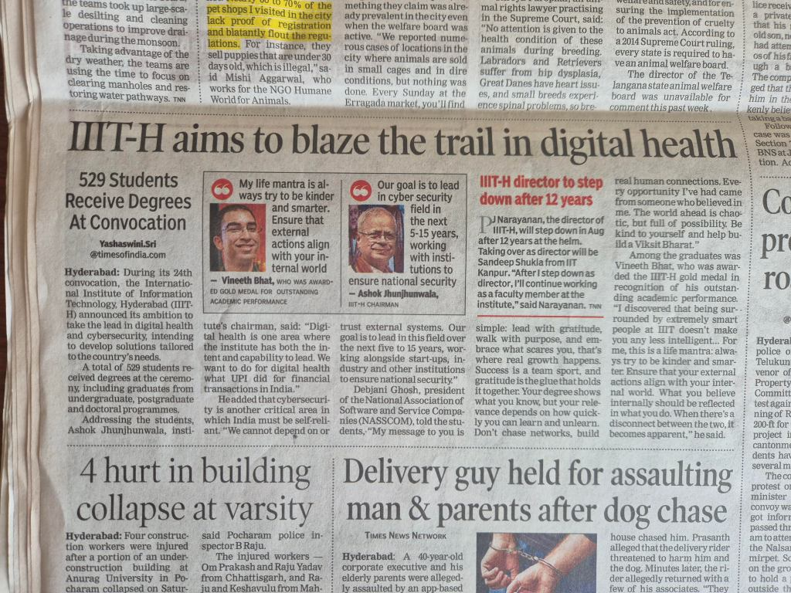

I also want to flex here, so – I got the gold medal for the highest GPA at IIIT. Here’s a very nice picture form the event.
And, also came in the newspaper!

Also (anti-thesauraus, much?), I went viral on Indian twitter when I thought of sharing the news with my (then) 17 followers.